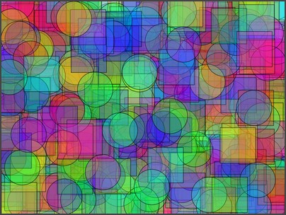

CS 124, Fall 2021
Lab 4: Loopy Art (with for statements)
For this lab, you will generate random "computer art." Hopefully that will be fun. As for the programming, the main point of the lab is to use "for" statements. Drawing each type of art will require one or more loops. For this lab, you should use for loops, not while loops.
You should start with a copy of the file LoopyArt.java. You can get a copy using the link or from the directory /classes/cs124_Eck. All of your work for this lab will be done inside the drawPicture() subroutine in LoolyArt.java.
Since you will be using JavaFX for this lab, don't forget to compile your program using the jfxc command and run the program using the jfx command.
Your work for this lab is due at the start of next week's lab, as usual. You can just turn in a copy of the file LoopyArt.java. There is no need to put the file in a directory named lab4 (but you can do that if you want).
Color Functions and Random Colors
This section just gives you some commands that you can use to make random colors for your program.
You will be using the JavaFX drawing commands that were first introduced in Lab 2. You should review those commands. You will want to make different kinds of random colors for use in the art that your program creates. Recall that JavaFX uses two drawing colors, one for "filling" shapes and one for "stroking" shapes. These colors are set separately by the subroutines
g.setFill( c );
g.setStroke( c );
The parameter, c, in these subroutines can be one of the standard colors such as Color.BLACK or Color.RED. However, it can also be a color created by a call to a function, such as Color.color(0.5,0.5,1.0). In this function, the three numbers are double values in the range 0 to 1 giving the amounts of red, green, and blue in the color. You can make a completely random fill color using
g.setFill( Color.color(Math.random(), Math.random(), Math.random()) );
and you can set the stroke color to be a random mixture of red and blue using
g.setStroke( Color.color(Math.random(), 0, Math.random()) );
There is another version of Color.color that has four parameters. The extra fourth parameter represents "opacity". Like the other components, the opacity is a number in the range 0.0 to 1.0. Values less than 1.0 give colors that are translucent, that is, partly see-through. When you draw a shape with a translucent color, it's as if the shape is made of colored glass. So, for example,
g.setFill( Color.color(Math.random(), Math.random(), Math.random(), 0.3) );
makes a rather translucent random color for filling shapes.
You might want to make a random gray color. The function Color.gray(x) makes a "grayscale" color, which ranges from black when x is 0.0 to white when x is 1.0. To get a random gray, you can use
g.setFill( Color.gray(Math.random()) );
So far, we have been using "RGB" colors which are created by specifying the amount of red, green, and blue in the color. JavaFX also supports another way of specifying color using "HSB" colors. HSB stands for Hue, Saturation, and Brightness. HSB colors are created using the function Color.hsb(h,s,b). The hue gives the basic color (one of the colors of the rainbow) as a value in the range 0.0 to 360.0. The s and b parameters are numbers in the range 0.0 to 1.0. If you imagine mixing the basic color with white paint, you can understand saturation: A saturation of 1 gives a pure color, with no white mixed in. The smaller the saturation, the more white. For example, red is a pure color with s equal to 1, but pink is an unsaturated red, with a value for s more like 0.3. Now, if you take the color and mix in black paint, you understand brightness. When b is 1.0, you get the brightest version of the color, with no black paint. Decreasing b makes the color darker. So, for our purposes in this lab, you can make a random bright, saturated color using
g.setFill( Color.hsb(360*Math.random(), 1, 1) );
or maybe a random light pastel shade with
g.setFill( Color.hsb(360*Math.random(), 0.3, 1) );
You can also add a fourth parameter to Color.hsb() specifying opacity.
The Assignment: Random Art
The starting point for this lab is the file LoopyArt.java. You will write your code for this lab inside the drawPicture() subroutine in that file.
As usual, grading will be based partly on ambition and maybe a bit on artistic merit. You are required to make four different types of art. Maybe you can get a little extra credit by doing one or two additional types.
Specifications for three types of art are given below. For the fourth type, you can be creative. The code in drawPicture() will randomly select which kind of art to draw. Note that each time the user clicks the window, that function will be called again, and it will draw a new random artwork. The subroutine already contains the lines
int artType; // For randomly selecting which type of art to draw. artType = (int)(4*Math.random() + 1);
You should use the value of artType to decide which kind of art to draw. We have looked at an example of using an "if..else if" statement to make this kind of random decision. The outline of the statement takes the form
if ( artType == 1 ) {
// Draw the first kind of art.
}
else if (artType == 2) {
// Draw the second kind of art.
}
else if (artType == 3) {
// Draw the third kind of art.
}
else {
// Draw the last kind of art.
}
Here is the assignment...
Art Type 1: Pseudo Pollack. The artist Jackson Pollock is known for large canvases covered with splashes and dribbles of paint. To get something that is vaguely in the Pollack style, you can just draw some large number of random lines of different random colors. The coordinates for the endpoints of the lines are to be selected at random. Remember that the x-coordinate should be in the range 0 to 800, and the y-coordinate should be in the range 0 to 600 (assuming that you don't change the size of the canvas in your program). Consider making the number of lines random. Consider making the line width random. Consider making the background a random gray color. A random gray background is not a requirement, but you should definitely fill the canvas with something before drawing the lines — when the user clicks the canvas, you definitely need to fill the canvas with something to cover the previous drawing before drawing lines on top of it! You should never have parts of one kind of art appearing underneath the next type of art that you draw.
Art Type 2: Kan't be Kandinsky. Some of the canvases by Wassily Kandinsky feature a grid of repetitive patterns in different colors. To imitate this style, you should cover the drawing area with rows and columns of squares, and draw something inside each square. The square should be outlined in black or some other color. (Hint: Maybe I filled the canvas with black before drawing the squares.) The squares should be filled using some kind of random colors. I used random pastels made with Color.hsb(). What you put in the middle of each square is up to you. I just used randomly colored circles. You might do something more elaborate like squares inside squares inside squares. You might even use words or letters instead of shapes inside the squares. You will need to use nested for loops for this problem. Here is an example of my version:
Art Type 3: Night Sky. A color "gradient" means that color changes gradually with position. For the third kind of art, the background must be a gradient that changes color as the y-coordinate increases from top to bottom. Sprinkle some stars at random locations, and a disk representing a full moon. The gradient can be made by filling 600 rectangles, where each rectangle is 800 pixels wide and 1 pixel tall. The y-coordinates for the rectangles need to change. So do the colors. In my version, the color is a combination of red and blue. The amount of blue is constant for all of the rectangles, but the amount of red increases gradually from top to bottom. You don't necessarily have to use the same colors. Note that there is no randomness in the gradient. The randomness is in the position of the stars and maybe the position and/or size of the moon. You might add something like a cloud, a house, or a tree. Here is my version:
Art Type 4: Be Creative. For the fourth type of art, you can do whatever you like, as long as your art uses randomness and at least one for loop. (But you don't necessarily have to stop at four kinds of art!) Here are two examples of other possibilities, one a simple variation on the idea of drawing random lines, and one that draws a large number of random translucent squares and ovals.
